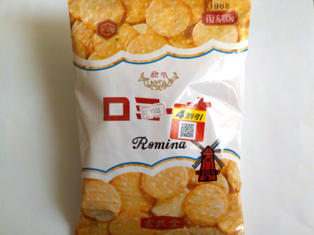

げんぶ堂のロミーナ復刻版
2022/12/11

薄焼きせんべいサラダ味を少し小さくした感じがします。この商品の方がお米味が強く、歯ごたえもあります。（薄焼きせんべいサラダ味も十分美味しいです。）
これ食べて思ったんですが、お米味がしないせんべいって多い気がします。塩味とか調味料味の強い煎餅より、ちゃんと煎餅の味がするこの商品の方が美味しいと思いました。
兵庫県豊岡市中陰376-3
2022/12/11

薄焼きせんべいサラダ味を少し小さくした感じがします。この商品の方がお米味が強く、歯ごたえもあります。（薄焼きせんべいサラダ味も十分美味しいです。）
これ食べて思ったんですが、お米味がしないせんべいって多い気がします。塩味とか調味料味の強い煎餅より、ちゃんと煎餅の味がするこの商品の方が美味しいと思いました。